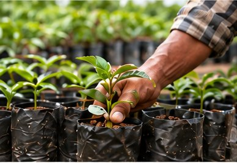
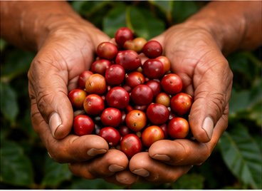
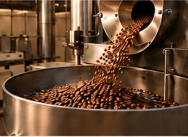
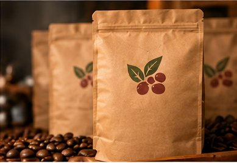
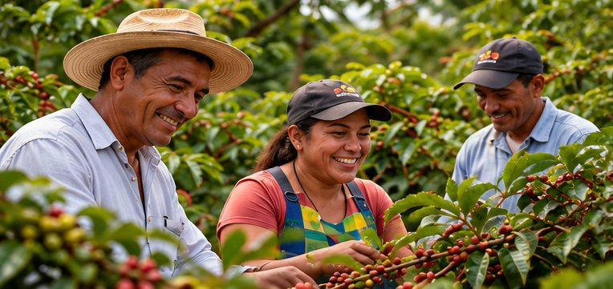
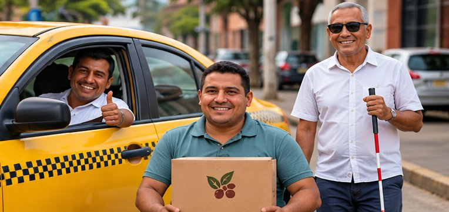

Desarrollo de fincas
Acompañamos a campesinos y propietarios rurales en el establecimiento y desarrollo de fincas de café robusta, con asistencia técnica y soluciones a la medida.
Conoce másCreamos oportunidades para producir, procesar y vender café robusta.
Trabajamos de la mano con campesinos y propietarios rurales para desarrollar fincas productivas, conectarlas con mercados y llevar el café robusta panameño cada vez más lejos.
Contactanos para conocernos
Acompañamos a campesinos y propietarios rurales en el establecimiento y desarrollo de fincas de café robusta, con asistencia técnica y soluciones a la medida.
Conoce más
Impulsamos una producción eficiente y sostenible, con buenas prácticas agrícolas y enfoque en calidad para un robusta panameño con gran potencial.
Conoce más
Apoyamos el beneficio, procesamiento y control de calidad del café robusta, con tecnología y buenas prácticas que agregan valor y garantizan un producto consistente.
Conoce más
Ofrecemos servicios de tostado y empaque para marcas aliadas, con altos estándares de calidad y la experiencia de un equipo comprometido con el café.
Conoce másConectamos productores, aliados y distribuidores para crear oportunidades reales a través del café robusta, generando valor para las comunidades rurales de Panamá.
Conoce nuestra red de afiliados
